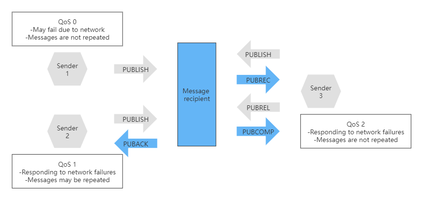

MQTT Introduction
The MQTT (MQ Telemetry Transport) protocol is a lightweight network protocol developed by IBM in 1999. It adopts a publish-subscribe communication model. It has three main features：
- The binary message content encoding format is adopted, so the payload content such as binary data, JSON and pictures can be easily transmitted
- The protocol header is very compact, and the protocol interaction is also simple, which ensures that the network transmission traffic is small.
- Supports 3 QoS (Quality of Service) levels, which is convenient for applications to choose flexibly according to different scenarios.
The MQTT protocol is very suitable for remote devices with limited computing power, low network bandwidth, and unstable signals, so it has become the de facto network protocol standard for IoT systems.
MQTT’s own “gene” is very powerful
The ecological perfection of MQTT and the excellent design of the protocol itself make the MQTT protocol the “first language” of IoT devices.
Publish-subscribe model that fits most application scenarios of IOT
Using the publish-subscribe model, the MQTT protocol has many advantages, such as allowing a sensor data to trigger a series of actions; temporary offline caused by network instability will not affect work; it is convenient to dynamically adjust the system scale according to demand, etc. This makes it meet the needs of most IoT scenarios.
Lightweight features that meet the needs of resource-constrained devices in IoT
MQTT is a lightweight network protocol, which is also an important reason for its popularity in IoT systems. After all, a large number of IoT devices are devices with limited computing resources and low network bandwidth. This “lightweight” manifests itself in two ways.
On the one hand, MQTT messages are encoded in a binary format, rather than a textual representation like the HTTP protocol. In this text transmitted by the HTTP protocol, each character occupies 1 byte. And if you use the MQTT protocol, one byte can represent a lot of content. The image below shows the format of the MQTT fixed header, which is only 2 bytes long:

The first byte is divided into high 4 bits (4 to 7) and low 4 bits (0 to 3); the low 4 bits are the data packet identification bits, each of which can represent different meanings; the high 4 bits are the identification bits for different packet types. The second byte indicates the total number of bytes in the packet header and the message body, and the highest bit indicates whether there is a third byte, and together with the second byte indicates the total number of bytes. If there is a third byte, then its highest bit indicates whether there is a fourth byte, together with the second byte and the third byte to indicate the total number of bytes. By analogy, there may also be a fourth byte and a fifth byte, but this part representing the number of bytes of the variable header and message body can only reach the five byte at most, so it can be the maximum packet length represented is 256MB.
For example, a CONNECT type packet requesting a connection establishment requires 14 bytes in the header; the PUBLISH type packet header of a message is only 2 to 4 bytes long.
On the other hand, the specific interaction process design reflected in the message is very simple, so there are very few types of interactive messages in MQTT.

As can be seen from the table, MQTT 3.1.1 defines a total of 14 types of data packets, which correspond to values from 1 to 14 in the upper 4 bits of the first byte.
Always pay attention to the optimized design of IoT devices with low power consumption requirements
In addition to making the protocol lightweight enough, the MQTT protocol also pays great attention to the optimized design of low power consumption, which is mainly reflected in the optimization of energy consumption and communication times.
For example, the MQTT protocol has a Keepalive mechanism. Its function is to allow both parties to discover in time when the connection between the Client and the Broker is interrupted, and to re-establish the MQTT connection to ensure reliable transmission of topic messages. The working principle of this mechanism is that both the Client and the Broker judge whether a message is transmitted between the two parties within a period of time based on the length of time determined by the Keepalive. This Keepalive time length is set when the Client establishes the connection. If the time exceeds this time length and the two parties do not receive new data packets, it is determined that the connection is disconnected.
Although Keepalive requires that data packets must be transmitted for a period of time, the actual situation is that it is impossible for Client and Broker to transmit topic messages all the time. What should we do?
The solution for the MQTT protocol is that two message types, PINGREQ and PINGRESP, are defined. None of them have variable headers and message bodies, which means they are only 2 bytes in size. Client and Broker can meet the requirements of the Keepalive mechanism by sending PINGREQ and PINGRESP messages respectively. I guess you have also figured out that it would be a waste of power and network resources to keep sending messages like this “dumbly” on a regular basis. Therefore, if there is data transmission between the Client and the Broker within the Keepalive time period, the Keepalive mechanism will also count it, so there is no need to judge by sending PINGREQ and PINGRESP messages.
In addition to the Keepalive mechanism, the repeated topic feature in MQTT 5.0 can also help us save network resources. When a client sends a message on a topic repeatedly, it can set the topic name length to 0 from the second time, so that the broker will automatically process the message according to the last topic. This situation is very common for sensor devices, so this feature is very practical in the work.
Multiple service quality levels for the ever-changing network environment in IOT
The MQTT protocol is designed with 3 different QoS (Quality of Service) levels. You can choose flexibly according to the scenario to ensure reliable communication in different environments.
What is QoS? It refers to the negotiation between the communicating parties about the reliability of message transmission.
QoS level 0, the message is only sent once, and the message may be lost;
QoS 1 level, the sender will receive feedback to ensure the delivery of the message, but the message may be repeated；
QoS level 2, through multiple interactions between sender and receiver, it is guaranteed that there is one and only one message.

It can be seen that the process of QoS 0 and QoS 1 is relatively simple; while QoS 2 has a relatively complicated process in order to ensure one and only one reliable transmission. Normally, QoS 2 has 4 interactions of PUBLISH, PUBREC, PUBREL and PUBCOMP. As for the “abnormal situation”, the sender needs to send the message repeatedly. For example, if the PUBREC message is not received for a period of time, the PUBLISH message needs to be sent again. Note, however, that the “duplicate” flag in the message should be set to 1 at this time, so that the receiver can handle it correctly. Likewise, if the PUBCOMP message is not received, the sender needs to send the PUBREL message again.
Supports data security that is increasingly valued in IoT applications
Speaking of secure transmission, first we need to verify whether the Client has permission to access the MQTT Broker. In order to control the client’s access, MQTT provides a username/password mechanism. In the process of establishing a connection, it can filter valid connection requests by judging the correctness of the user name and password. However, this mechanism alone cannot guarantee data security during network communication. Because in the way of clear text transmission, not only device data, but even user names and passwords may be intercepted from the network by others and leaked, so others can disguise as legitimate devices to send data. Therefore, we also need the support of communication encryption technology. The MQTT protocol supports SSL/TLS encrypted communication. With SSL/TLS encryption, MQTT is converted to MQTTS. This is somewhat similar to the relationship between HTTP and HTTPS.
Experience MQTT
Simple experience of MQTT with hbmqt
The first step is to install hbmqtt, which is an open source Python-based MQTT Broker software, just including some tools we need to use. Compared to other options, this software is very easy to install because it is available in Python’s PYPI repositories, so you can install it with the pip command. This is also the main reason for choosing to use it. However, it should be noted that hbmqtt is implemented based on Python3, so the pip3 tool is used here.
pip3 install hbmqttAfter the installation is complete, we can use the two command line tools hbmqtt_sub and hbmqtt_pub provided in hbmqtt. By the name, you should also be able to see that hbmqtt_sub can act as a subscriber; hbmqtt_pub can act as a publisher of messages.
As for the broker between subscribers and publishers, that is, MQTT Broker, we use Eclipse’s free and open online Broker service. Open the link, you can see the introduction information about the port, both encrypted and non-encrypted methods are supported, and there is also a Websocket-based implementation, which is very beneficial for front-end web-based applications.
We first use the unencrypted method of port 1883, and then determine a topic (Topic) for message transmission. The topic determines the category of the message and is used for message filtering. For example, the message we want to test later can be set to /mqtt/test.
Next, we can subscribe to this topic message by entering the following command in the terminal interface of the computer:
hbmqtt_sub --url mqtt://test.mosquitto.org:1883 -t /mqtt/testNow, we start another terminal interface and publish a message on the topic /mqtt/test through hbmqtt_pub:
hbmqtt_pub --url mqtt://test.mosquitto.org:1883 -t /mqtt/test -m Hello,World!Build your own MQTT Broker for in-depth experience
Using VerneMQ as MQTT Broker
The first step is to install VerneMQ using docker.
docker run -p 1883:1883 -e "DOCKER_VERNEMQ_ACCEPT_EULA=yes" -e "DOCKER_VERNEMQ_ALLOW_ANONYMOUS=on" --name vernemqtt -d vernemq/vernemqThe second step is to use VSCode to connect VerneMQ and install the VsMqtt plugin.

The client code of MQTT has been implemented, and now we can use the Eclipse Paho project.